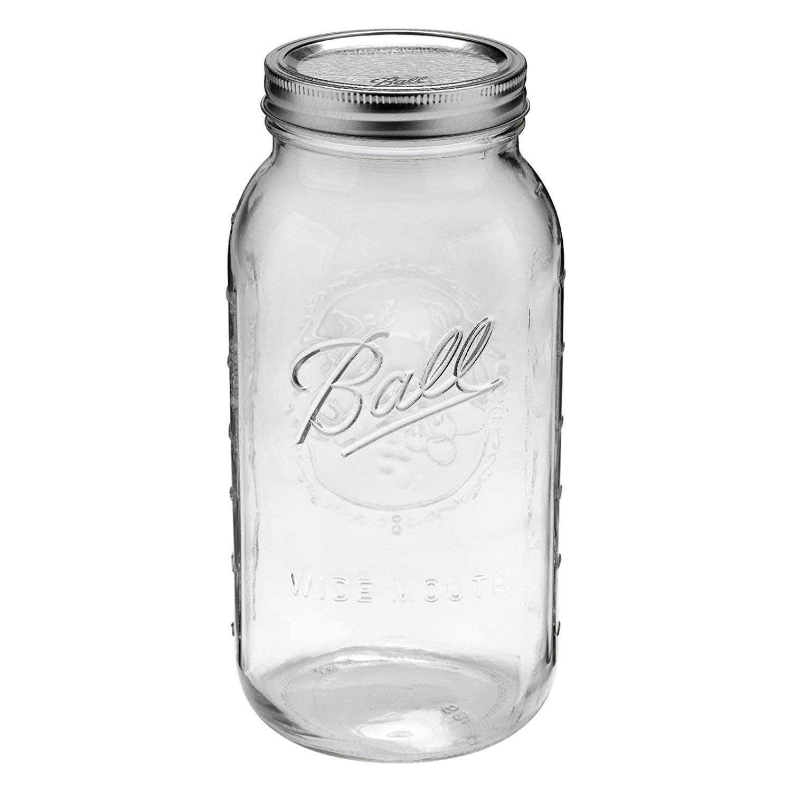

Method
- Determine
how many servings you want to brew. Grind your beans on your coarsest setting, conversely grind it at the store or cafe at the coarsest setting. You could also buy coffee that's already ground, but make sure it's coursely ground.- Because the grinder will still make some small pieces, you may optionally use a mesh strainer to get rid of the smallest bits. This will keep your coffee from getting bitter and cloudy.
Put the ground coffee in your air-tight container.Add your water to the jar and seal tightly. Swirl the jar gently to get all the coffee wet.Refrigerate your jar , overnight.- The next morning,
slowly pour the coffee through your mesh bag into your second container . Add 1 part coffee concentrate to 1 part milk or water. Store the rest of the concentrate in the fridge for up to 2 weeks.Enjoy your amazing coffee , notice its smoothness compared to other methods.
Ingredients for 10 cups of coffee
The cold brew method makes a concentrate that you will add milk or water to. Just divide the number of cups you want by 2, this gives you how much water you need in cups and how much coffee you need in ounces. Let's say we will make 10 cups of coffee, for 2 cups for each weekday. You will need 5 cups of water and 5 oz of coffee by weight to make the concentrate.
- Coffee beans (5oz by weight)
- Filtered water (5 cups)
Tools

Two airtight jars
You'll want at least 2 quarts / 64 oz for our recipe